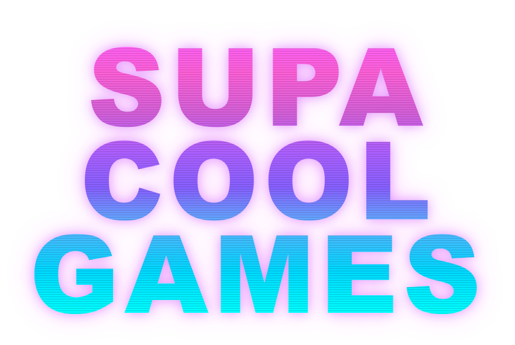

A Y3K Lab game dev studio. We make retro-futuristic games with craft and a little neon.
A faithful remake of Stuart Cheshire's Bolo, the multiplayer tank game for the classic Macintosh. Claim bases, build pillboxes, hold the island. It runs in a browser, with nothing to install.
The successor, rebuilt in 3D. Sixteen players on one island, the same bases and pillboxes and mines, a round you can win. It is in build now and plays on PC, mobile and console.